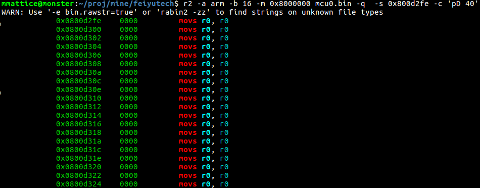
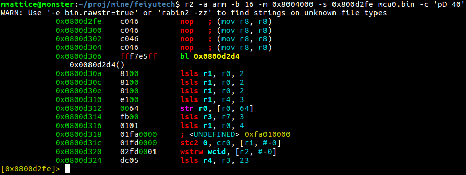

Digging into radare2
I've become a fan of scanlime. She is currently working on a collection of bots to let people on the internet follow her cat, Tuco, around her home/shop. In support of that, she's REing a Feiyu Tech gimbal for a gopro to figure out how to make it accept commands instead of PPM pulses (RC controller signals).
Between herself and a cadre of people that watch her live stream all of this, the firmware update format from the vendor has been reversed and can be unpacked and decrypted with some utilities she's built.
She tears apart binaries with IDA Pro. That costs some not insignificant amount of cash for toying around at home. Especially when you're REing ARM binaries like she is now (pretty much, non-x86 requires IDA Pro).
Enter radare2. It's a suite of tools to used to RE. It's open source and apt-get installable.
In one of her streams, the unpacked firmware was loaded up in IDA and annotated a bit. My plan is to figure out how to do those things in this OSS tool.
To get started, the chip on each of the three axes is a stm32f103c8t6. It's helpful to have a few manuals around on this thing.
We have to make a starting assumption that the binary we get from unpacking the image from Feiyu is one continuous blob.
$ xxd -g 1 mcu0.bin | head 00000000: 18 1c 00 20 ff d2 00 08 21 c5 00 08 23 c5 00 08 ... ....!...#... 00000010: 25 c5 00 08 27 c5 00 08 29 c5 00 08 00 00 00 00 %...'...)....... 00000020: 00 00 00 00 00 00 00 00 00 00 00 00 2d c5 00 08 ............-... 00000030: 2b c5 00 08 00 00 00 00 2f c5 00 08 31 c5 00 08 +......./...1... 00000040: 45 c5 00 08 47 c5 00 08 49 c5 00 08 4b c5 00 08 E...G...I...K... 00000050: 4d c5 00 08 4f c5 00 08 51 c5 00 08 53 c5 00 08 M...O...Q...S... 00000060: 55 c5 00 08 57 c5 00 08 59 c5 00 08 5b c5 00 08 U...W...Y...[... 00000070: 5d c5 00 08 61 c5 00 08 63 c5 00 08 67 c5 00 08 ]...a...c...g... 00000080: 69 c5 00 08 6b c5 00 08 6d c5 00 08 99 c5 00 08 i...k...m....... 00000090: 9b c5 00 08 9d c5 00 08 9f c5 00 08 c9 c5 00 08 ................
This is the beginning of the file. According to the RM, page 60:
..., the CPU fetches the top-of-stack value from address 0x0000 0000, then starts code execution from the boot memory starting from 0x0000 0004.
That means the 32bit address in the 2nd 4 bytes above are our entry point. Let's load that address up in r2 and see what happens.
That doesn't look right at all. Lot's of moves of r0 into r0, plus they're all 0x0000. That's not our entry point. Micah ended up looking for round numbers of offsets to load the code at. She happened upon 0x4000 as an offset, and that's supported by the FM_, page 7 which has a table on it showing the first 4 sectors of flash are 16Kbyte in size.
The nop-sled looks a little weird, but it's at least some code. The dump offset is 1 off the value in the Reset vector, but that's because
| [1] | http://www.st.com/content/ccc/resource/technical/document/reference_manual/59/b9/ba/7f/11/af/43/d5/CD00171190.pdf/files/CD00171190.pdf/jcr:content/translations/en.CD00171190.pdf |
| [2] | http://www.st.com/content/ccc/resource/technical/document/programming_manual/5b/ca/8d/83/56/7f/40/08/CD00228163.pdf/files/CD00228163.pdf/jcr:content/translations/en.CD00228163.pdf |
| [3] | http://www.st.com/content/ccc/resource/technical/document/programming_manual/f7/7e/b9/a8/31/58/41/7b/CD00233952.pdf/files/CD00233952.pdf/jcr:content/translations/en.CD00233952.pdf |